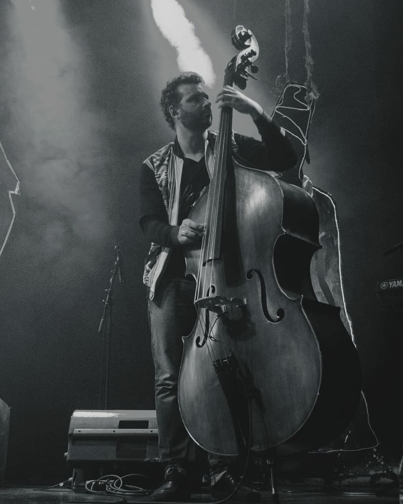

Lilly & Elisabeth
Original theme composed for the audiobook and live performance project Lilly & Elisabeth
Multi-instrumentalist, composer and musical collaborator based in Berlin.
François Perdriau’s musical work moves between performance, recording and original composition. As a drummer, he performs with The Jungle Jazz Band and the Syncopation Society Orchestra, combining a deep knowledge of early jazz with a contemporary artistic approach. As an electric bass and double bass player, he also performs with Antoine Villoutreix.
Alongside his work as a performer, he writes music for songs, voices and narrative projects, including compositions for Meschiya Lake, songs with Antoine Villoutreix, the main theme of Lilly & Elisabeth, and recent image-inspired musical sketches.


François Perdriau is a multi-instrumentalist with a long-standing practice in traditional jazz, early swing and acoustic music. His work as a performer is rooted in collective sound, rhythm, phrasing and the energy of live performance.
He performs with The Jungle Jazz Band and the Syncopation Society Orchestra, and develops recording and production work through Nadanadi Studio in Berlin.
A selection of original songs, collaborative songwriting projects, narrative themes and image-inspired compositions.
Original theme composed for the audiobook and live performance project Lilly & Elisabeth
A collection of image-inspired compositions exploring narrative, emotion and acoustic textures.
Lyrics by Antoine Villoutreix. Music by François Perdriau. Produced by Super Antena Tropical.
Lyrics by Antoine Villoutreix. Music by François Perdriau. Produced by Super Antena Tropical.
Lyrics by Antoine Villoutreix. Music by François Perdriau.
Two original compositions and arrangements written for Meschiya Lake & The New Movement.